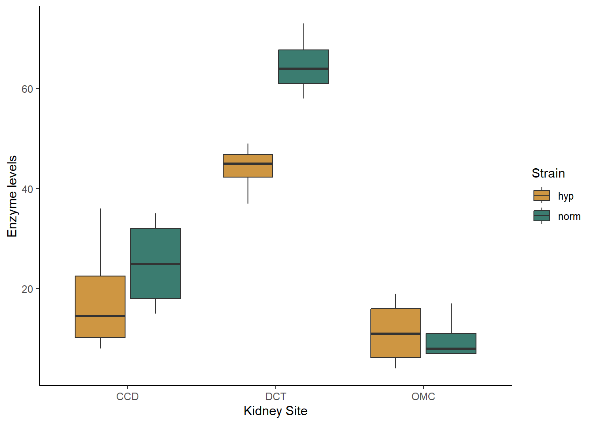
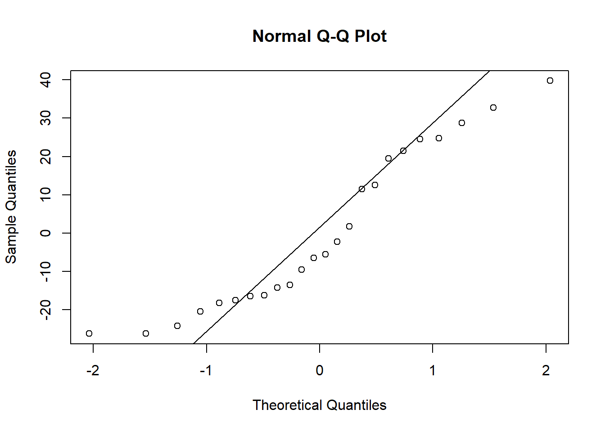
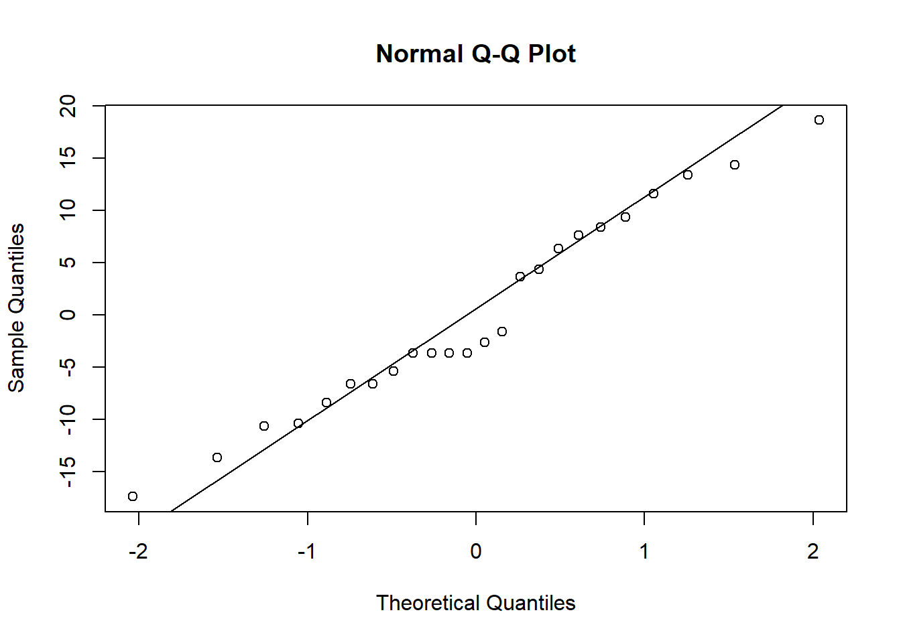
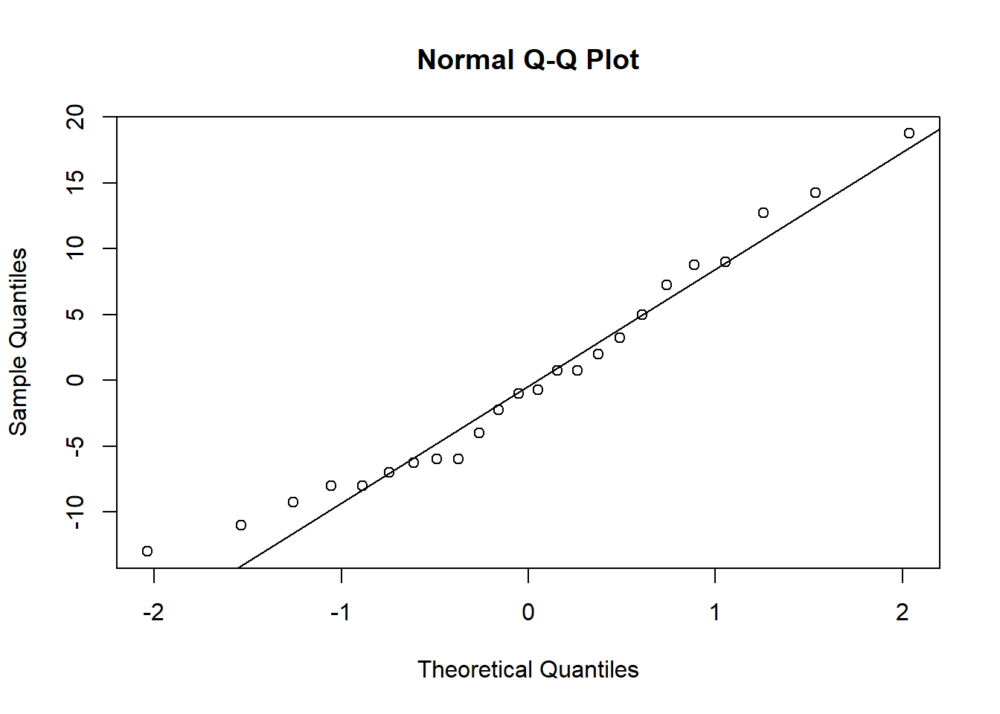
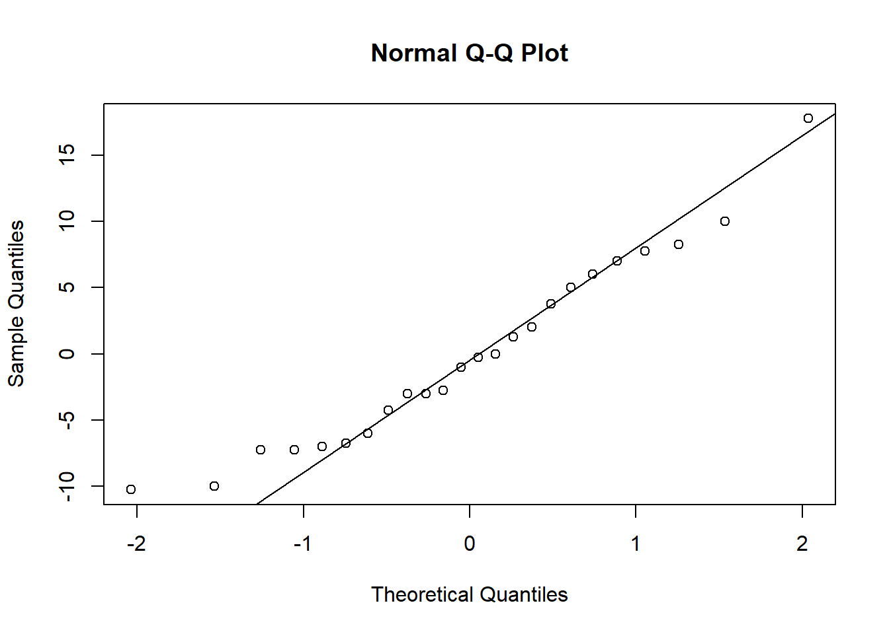
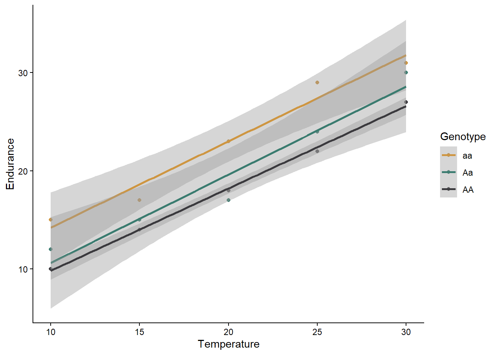
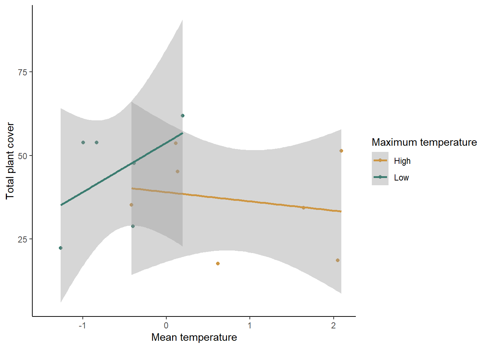

ESS 3500 R Handbook, Lesson 10
Emily Schultz
2023-02-15
Lesson 10: Multiple Predictors
In the previous lessons, we have worked with models that have only one independent and one dependent variable. However, it is common to have more than one independent variable that we would like the test. This is often particularly true when we do observational studies, and there are a whole suite of variables that might affect the response we measure. In this lesson, we will cover models with multiple predictors. We will focus on examples with only two predictors, but the methods can easily be extended to include more than two predictors as well.
For these examples, we will only look at the likelihood approach, which can be more powerful for testing multiple alternative hypothesis. However, similar tests can be done with a classic frequentist approach, using two-way ANOVAs, ANCOVAs, and stepwise (multiple) regression, for the three examples, respectively.
We will use both the ggplot2 and dplyr packages in this lesson, so load those before you get started.
library(ggplot2)
library(dplyr)10.1 Two categorical variables (Two-way ANOVA)
For our first example, we will work with two categorical predictor variables. We will use a data set from a medical test related to hyptertension. One common cause of hypertension is high sodium levels, which are controlled in part by an enzyme in the kidney called Na-K-ATPase. Researchers tested the activity of Na-K-ATPase in two strains of lab rats: a control strain and a strain selected to spontaneously develop hypertension. They wanted to know if Na-K-ATPase activity varied between these two strains and, if so, what sites in the kidney varied in their enzyme activity. The two independent variables are the rat strain (normal or hypertensive) and the kidney site (DCT, CCD, or OMC).
Visualizing and building the models
We’ll start off by loading and visualizing our data. Be sure your working directory is set to the location of the kidney data file.
kidney <- read.csv("kidney.csv")Now, let’s make a box plot to visualize our data set. We will put site on the x-axis and group and color our boxes by lab rat strain (hypertensive or not).
ggplot(kidney, aes(x=site, y=enzyme, fill=hyper)) +
geom_boxplot() +
scale_fill_manual(values=c("#ce9642","#3b7c70")) +
labs(x="Kidney Site", y="Enzyme levels", fill = "Strain") +
theme_classic()
Based just on the graph, what patterns do you see in the data. Do the strains differ in their enzyme activity? What the kidney sites? Does there appear to be an interaction between the two variables?
When you are working with categorical data, you can also use the
summarise function to get the mean values for each of your
groups, if you would like. You will want to group your data by both of
your independent variables before summarizing:
grouped <- group_by(kidney,site,hyper)
kidney_summary <- summarise(grouped,Mean_enzyme=mean(enzyme))## `summarise()` has grouped output by 'site'. You can override using the
## `.groups` argument.kidney_summary## # A tibble: 6 × 3
## # Groups: site [3]
## site hyper Mean_enzyme
## <chr> <chr> <dbl>
## 1 CCD hyp 18.2
## 2 CCD norm 25
## 3 DCT hyp 44
## 4 DCT norm 64.8
## 5 OMC hyp 11.2
## 6 OMC norm 10Now let’s proceed with building our models. Again, we will have multiple alternative models representing four different hypotheses: (1) only strain matters, (2) only site matters, (3) both strain and site matter but don’t interact, (4) both strain and site matter and they interact. The models are built in this order after the null model below.
kidney_null <- lm(enzyme ~ 1, data = kidney)
kidney_hyper <- lm(enzyme ~ hyper, data = kidney)
kidney_site <- lm(enzyme ~ site, data = kidney)
kidney_both <- lm(enzyme ~ hyper + site, data = kidney)
kidney_int <- lm(enzyme ~ hyper*site, data = kidney)You can view the output of your models by typing the name of each model or using the summary function. I personally find it difficult to interpret what the interaction looks like just based on the coefficients. This is where our graphs can come in handy. Looking at our boxplot can help us see the nature of the interaction, if any, between our variables.
Before we move on to testing our models, lets also check our assumption of normality. We will save the residuals from each model and look at the associated qqplots (you could make histograms instead if you find those easier to interpret).
resid_null <- resid(kidney_null)
resid_hyper <- resid(kidney_hyper)
resid_site <- resid(kidney_site)
resid_both <- resid(kidney_both)
resid_int <- resid(kidney_int)qqnorm(resid_null)
qqline(resid_null)
qqnorm(resid_hyper)
qqline(resid_hyper)
qqnorm(resid_site)
qqline(resid_site)
qqnorm(resid_both)
qqline(resid_both)
qqnorm(resid_int)
qqline(resid_int)
When you check the residuals for multiple competing models like this, you might find they look good for all of the models, they look bad for all of the models, or they look good for some models but bad for others. If they look good for all models, it’s of course fine to proceed. If they look bad for all models, that’s when you should try transforming your data. If you get a mix of good and bad, that likely means that some of the models (the ones with the bad residuals) are not as good for explaining the patterns in your data. You can proceed with the test and factor in the residuals as another consideration for which model best represents your data.
Here, the distributions of the residuals probably aren’t normal for most of the models, but there is also no sign of a lot of skew. The ones that are not normal are probably fairly flat distributions. Therefore, we can probably be comfortable moving ahead with the tests.
You can look at the box plot you alreay made to check variances. They don’t look great, but (I can tell you because I tried it), both square root and log transforms will make it worse, and our sample sizes are equal, so I recommend proceeding with the test.
Testing the models: Likelihood
Now we will use the likelihood approach and AIC function
to compare our models, just like we did with the millipede models.
AIC(kidney_null,kidney_hyper,kidney_site,kidney_both,kidney_int)## df AIC
## kidney_null 2 217.8267
## kidney_hyper 3 218.7425
## kidney_site 4 183.5836
## kidney_both 5 179.7022
## kidney_int 7 175.1477Based on the output table, which model was the best? Was it significantly better than the next best model? What do the differences in AIC values tell you about the effects of each predictor and their interaction?
10.2 Continuous and categorial predictors (ANCOVA)
For our final example, we will look at a blend of the previous two types of predictors and consider a case where we have one continuous and one categorical predictor. We will use an example of butterfly endurance and how it is affected by both temperature and the genotype of the butterfly.
Visualizing and building the models
butterfly <- read.csv("butterfly.csv")ggplot(data=butterfly, aes(x=Temp,y=Endurance,color=Genotype)) +
geom_point() +
geom_smooth(method="lm") +
scale_color_manual(values=c("#ce9642","#3b7c70","#3b3a3e")) +
labs(x="Temperature") +
theme_classic()## `geom_smooth()` using formula = 'y ~ x'
What is your initial interpretation for how temperature and genotype affect the endurance of butterflies, based on the graph? Does unequal variances seem to be a problem?
We will now move on to building our models: one null model and our four different alternative models.
butter_null <- lm(Endurance ~ 1, data=butterfly)
butter_temp <- lm(Endurance ~ Temp, data=butterfly)
butter_geno <- lm(Endurance ~ Genotype, data=butterfly)
butter_both <- lm(Endurance ~ Temp + Genotype, data=butterfly)
butter_int <- lm(Endurance ~ Temp*Genotype, data=butterfly)For the sake of time, we won’t check the residuals here (I can tell you that they aren’t quite normal but are also not particularly skewed), but normally that is something you should do, following the same procedure you used for the kidney example. From the scatterplot we made, you can see the the variances are roughly equal. Therefore, let’s go ahead and proceed with the test.
Testing the models
Using the likelihood approach, we can again just use the
AIC function to compare our five models:
AIC(butter_null,butter_temp,butter_geno,butter_both,butter_int)## df AIC
## butter_null 2 103.12351
## butter_temp 3 73.47012
## butter_geno 4 105.64924
## butter_both 5 55.27518
## butter_int 7 58.88042Based on these AIC values, what can you conclude about the effects of temperature, genotype, and their interaction on butterfly endurance?
10.3 Two continuous predictors (multiple regression)
For our next example, we will work with two continuous predictor variables, sometimes called a multiple regression. We will use the climate and plant cover data we used for our simple regression lesson.
In the simple, we ran two regressions: one for each of our two models. However, we have discussed the problems with running multiple tests on the same data set. Furthermore, if we run separate tests for our different predictors, we can’t look for interactions between the variables. To address this, we can instead run a multiple regression, in which we will account for both mean temperature and maximum temperature at the same time.
First, load the data set. Be sure your working directory is set correctly.
plant <- read.csv("PlantSumm.csv")Visualizing and building the models
It is challenging to visualize two continuous predictor variable at the same time (I think 3D graphs are hard to read). One option is just to make separate scatter plots for each predictor, like we did above for our single regressions, but that does not allow you to see interactions between the two variables. What I often do is convert one of the predictors to a categorical variable (just for the graph, not for the test), and graph both of the predictors at the same time. We’ll try that.
First, we will use the mutate function to create a new
variable that converts maximum temperature to a category. We will just
use two categories: high and low. High maximum temperature will be
anything above the median maximum temperature from our data set, and low
maximum temperature will be anything less than or equal to the median.
To to this, we will use the ifelse function. This function
allows us to set a value for something if it matches
certain criteria (in this case, if the maximum temperature is greater
than the median) and set a different values if it does not match the
criteria.
med <- median(plant$Max_tempC)
plant <- mutate(plant,MaxT_cat = ifelse(Max_tempC > med, "High", "Low"))If you view the data set, you will now see a new variable called “MaxT_cat” that we will use to graph our data. Let’s make that graph now. We will use “Mean_tempC” as our x variable, and we will use two different colors to represent our two maximum temperature categories.
ggplot(data=plant, aes(x=Mean_tempC,y=tot_cover,color=MaxT_cat)) +
geom_point() +
geom_smooth(method="lm") +
scale_color_manual(values=c("#ce9642","#3b7c70")) +
labs(x="Mean temperature", y="Total plant cover",color="Maximum temperature") +
theme_classic()## `geom_smooth()` using formula = 'y ~ x'## Warning: Removed 6 rows containing non-finite values (`stat_smooth()`).## Warning: Removed 6 rows containing missing values (`geom_point()`).
What is your initial interpretation of the effects of mean and maximum temperature, based on the graph?
Now let’s build our null and alternative models:
plant_null <- lm(tot_cover ~ 1, plant)
plant_mean <- lm(tot_cover ~ Mean_tempC, plant)
plant_max <- lm(tot_cover ~ Max_tempC, plant)
plant_both <- lm(tot_cover ~ Mean_tempC + Max_tempC, plant)
plant_int <- lm(tot_cover ~ Mean_tempC * Max_tempC, plant)Once again, your all-knowing advisor (me) tells you that your data satifactorily meet the assumptions of normality and equal variance, so go ahead and move on to the test.
Maximum likelihood approach
You know the drill here. As usual, which just have to compare the AIC values between all of our models.
AIC(plant_null, plant_mean, plant_max, plant_both, plant_int)## df AIC
## plant_null 2 110.3634
## plant_mean 3 111.9256
## plant_max 3 108.9372
## plant_both 4 104.6580
## plant_int 5 105.2864Based on the AIC values, which model(s) is(are) the best? What does this tell you about which predictor are important for explaining plant cover?
Comparison between simple and multiple regression
Look back at the conclusions you drew about the effects of your predictor variables from your simple and multiple regressions (you can always go back to Lesson 9 in the R Handbook to see the results from the simple regression if your own code isn’t easy to access). Do your conclusions match? Why do you think this might be?
We’ll discuss this as a class, but think on your own/and or discuss in small groups first.
As a hint, it might help to consider the relationship between the two independent variables (mean temperature and maximum temperature). You can see the relationship between the two in the scatterplot I create below.
ggplot(data=plant, aes(x=Mean_tempC, y=Max_tempC))+
geom_point()+
labs(x="Mean temperature (C)", y="Max temperature (C)")+
theme_classic()